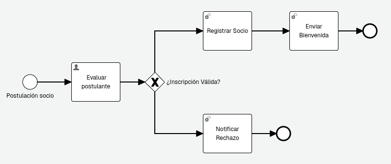
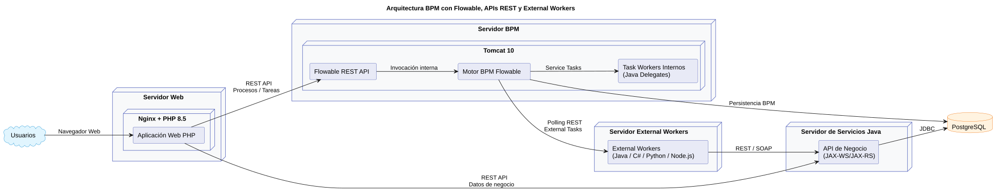
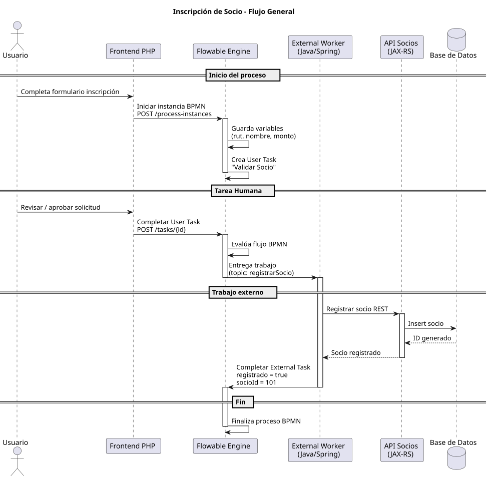
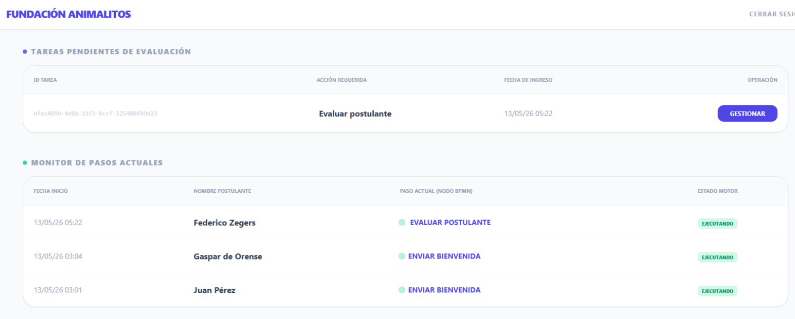
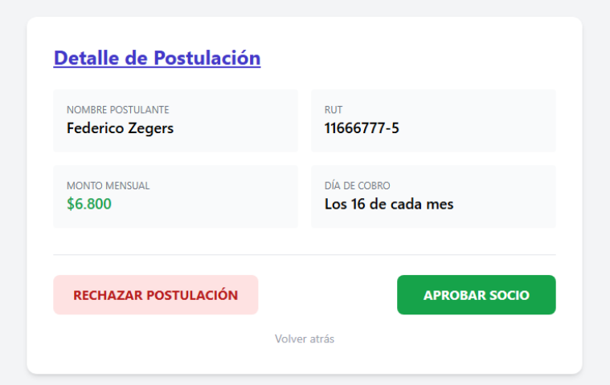

### Variables Globales
@authorization = Basic rest-admin:test
@baseUrl = http://localhost:8080/flowable-rest
@urlSwagger = {{baseUrl}}/docsAyudar a entender el modelo de programación usando un motor BPM
Revisión de la API Rest de Flowable OSS
Ejemplo de solución con WS Java, External Workers e interfaces en PHP
Minimum Viable Product
Pensar en modelo mínimo viable para el proceso
Interfaz de usuario mínima para ser útil
Ejemplos:
Datos que se persisten de una persona
Gestión de pagos
Archivo vs Enlace
Fundación sin fines de lucro
Inscripción de Socios
Flowable Engine OSS 7.2
PHP 8.5
Java 21 - Gradle
Tomcat 10





Motor BPMN
Modalidades
API Rest (preferida)
Incrustado
Descrita Swagger/OpenAPI
Se recomienda versión 7.2 de Flowable (versión 8 recién salida)
Usar Motor Open Source https://github.com/flowable/flowable-engine/releases
Se debe instalar en Tomcat, se recomienda versión 10
Se puede revisar documentación en: http://localhost:8080/flowable-rest/docs
En estos ejemplos se usa la sintaxis de archivos .http
### Variables Globales
@authorization = Basic rest-admin:test
@baseUrl = http://localhost:8080/flowable-rest
@urlSwagger = {{baseUrl}}/docs### Información del engine
GET {{baseUrl}}/service/management/engine
Authorization: {{authorization}}
Accept: application/json{
"name": "default",
"resourceUrl": null,
"exception": null,
"version": "7.2.0"
}### Desplegar BPMN
POST {{baseUrl}}/service/repository/deployments
Authorization: {{authorization}}
Content-Type: multipart/form-data; boundary=----Boundary
------Boundary
Content-Disposition: form-data; name="file"; filename="FundacionInscripcionSocio.bpmn"
Content-Type: application/xml
< ./FundacionInscripcionSocio.bpmn
------Boundary--{
"id": "ad14dd6a-4e4d-11f1-b724-fe5400f09d23",
"name": "FundacionInscripcionSocio",
"deploymentTime": "2026-05-12T21:58:14.847Z",
"category": null,
"parentDeploymentId": "ad14dd6a-4e4d-11f1-b724-fe5400f09d23",
"url": "http://localhost:7070/flowable-rest/service/repository/deployments/ad14dd6a-4e4d-11f1-b724-fe5400f09d23",
"tenantId": ""
}### Iniciar una nueva instancia de proceso
POST {{baseUrl}}/service/runtime/process-instances
Authorization: {{authorization}}
Content-Type: application/json
Accept: application/json
{
"processDefinitionKey": "fundacionInscripcionSocio",
"variables": [
{
"name": "fecha",
"value": "2026-05-09T14:30:33"
},
{
"name": "rut",
"value": "12345678-5"
},
{
"name": "nombre",
"value": "Juan Pérez Rosales"
},
{
"name": "monto",
"value": 5000
},
{
"name": "diaMes",
"value": 10
}
]
}{
"id": "a342c81f-4e57-11f1-b724-fe5400f09d23",
"url": "http://localhost:7070/flowable-rest/service/runtime/process-instances/a342c81f-4e57-11f1-b724-fe5400f09d23",
"name": null,
"businessKey": null,
"businessStatus": null,
"suspended": false,
"ended": false,
"processDefinitionId": "fundacionInscripcionSocio:2:ad38e02d-4e4d-11f1-b724-fe5400f09d23",
"processDefinitionUrl": "http://localhost:7070/flowable-rest/service/repository/process-definitions/fundacionInscripcionSocio:2:ad38e02d-4e4d-11f1-b724-fe5400f09d23",
"processDefinitionName": "Fundación Inscripción Socio",
"processDefinitionDescription": null,
"activityId": null,
"startUserId": "rest-admin",
"startTime": "2026-05-12T23:09:33.338Z",
"superProcessInstanceId": null,
"variables": [
{
"name": "rut",
"type": "string",
"value": "12345678-5",
"scope": "local"
},
{
"name": "fecha",
"type": "string",
"value": "2026-05-09T14:30:33",
"scope": "local"
},
{
"name": "monto",
"type": "integer",
"value": 5000,
"scope": "local"
},
{
"name": "diaMes",
"type": "integer",
"value": 10,
"scope": "local"
},
{
"name": "initiator",
"type": "string",
"value": "rest-admin",
"scope": "local"
},
{
"name": "nombre",
"type": "string",
"value": "Juan Pérez Rosales",
"scope": "local"
}
],
"callbackId": null,
"callbackType": null,
"referenceId": null,
"referenceType": null,
"propagatedStageInstanceId": null,
"tenantId": "",
"completed": false
}### Listar instancias de procesos en ejecución
GET {{baseUrl}}/service/runtime/process-instances
Authorization: {{authorization}}
Accept: application/json### Ver actividades históricas no terminadas
GET {{baseUrl}}/service/history/historic-activity-instances
?finished=false
Authorization: {{authorization}}
Accept: application/json### Tareas disponibles
GET {{baseUrl}}/service/runtime/tasks
Authorization: {{authorization}}### Completar UserTask y setear variable esValido
POST {{baseUrl}}/service/runtime/tasks/{{taskId2}}
Authorization: {{authorization}}
Content-Type: application/json
Accept: application/json
{
"action": "complete",
"variables": [
{
"name": "esValido",
"type": "boolean",
"value": true
}
]
}@taskId = 3020d2fe-4be4-11f1-8eb0-4cebbd354dff
### Obtener variables de una tarea
GET {{baseUrl}}/service/runtime/tasks/{{taskId}}/variables
Authorization: {{authorization}}
Accept: application/jsonPuedes escoger si usar REST y/o SOAP según su preferencia
Debe usar JAX-RS o JAX-WS
Ejemplo Rest
[versions]
jax-rs = "4.0.0"
jersey = "4.0.2"
h2 = "2.4.240"
[libraries]
jakarta-jaxrs = { module = "jakarta.ws.rs:jakarta.ws.rs-api", version.ref = "jax-rs" }
eclipse-jersey = { module = "org.glassfish.jersey.core:jersey-server", version.ref = "jersey" }
grizzly-http = { module = "org.glassfish.jersey.containers:jersey-container-grizzly2-http", version.ref = "jersey" }
jersey-hk2 = { module = "org.glassfish.jersey.inject:jersey-hk2", version.ref = "jersey" }
json-binding = { module = "org.glassfish.jersey.media:jersey-media-json-binding", version.ref = "jersey" }
db-h2 = { module = "com.h2database:h2", version.ref = "h2" }
[bundles]
jersey = ["eclipse-jersey", "grizzly-http", "jersey-hk2", "json-binding"]@Path("/socios")
public class SocioResource {
private static SocioDAO dao;
static {
try {
Connection conn = DriverManager.getConnection("jdbc:h2:mem:test;DB_CLOSE_DELAY=-1");
dao = new SocioDAO(conn);
dao.crearTabla();
} catch (Exception e) {
e.printStackTrace();
}
}
@POST
@Consumes(MediaType.APPLICATION_JSON)
@Produces(MediaType.APPLICATION_JSON)
public Response crearSocio(Socio socio) throws Exception {
socio.setFechaRegistro(LocalDate.now());
int id = dao.insertar(socio);
socio.setId(id);
return Response.status(Response.Status.CREATED).entity(socio).build();
}
@GET
@Produces(MediaType.APPLICATION_JSON)
public List<Socio> listarSocios() throws Exception {
return dao.listar();
}
}Manera mucho más flexible de implementar un Service Task
A diferencia de los Java Delegates
Un External Worker permite trabajar con distintos lenguajes como: C#, JS, Python, Go, etc
En el caso de no tener una librería implementada, se puede hacer con cualquier lenguaje que permita conectar con la API Rest
Ejemplo en C# de otro caso
Crear proyecto de Spring en https://start.spring.io/
Este ejemplo usa Gradle, pero también funciona con Maven
dependencies {
// spring
implementation("org.springframework.boot:spring-boot-starter")
// flowable external worker
implementation("org.flowable.client.spring:flowable-external-worker-spring-boot-starter:2.0.0")
// JAX-RS client (jersey)
implementation("org.glassfish.jersey.core:jersey-client:4.0.2")
// Jersey Injection Manager
implementation("org.glassfish.jersey.inject:jersey-hk2:4.0.2")
// Jersey JSON Binding
implementation("org.glassfish.jersey.media:jersey-media-json-binding:4.0.2")
}resources/application.properties
spring.application.name=ejemplo-external-worker
flowable.external.worker.rest.base-url=http://localhost:8080/flowable-rest
flowable.external.worker.rest.authentication.basic.username=rest-admin
flowable.external.worker.rest.authentication.basic.password=testMyExternalWorker.java
@Component
public class MyExternalWorker {
@FlowableWorker(topic = "registrarSocio")
public WorkerResult processJob(
AcquiredExternalWorkerJob job,
WorkerResultBuilder resultBuilder
) {
try {
System.out.println("Ejecutando External Worker");
var variables = job.getVariables();
var rut = variables.get("rut").toString();
var nombre = variables.get("nombre").toString();
Number montoNum = (Number) variables.get("monto");
double monto = montoNum.doubleValue();
Number diaNum = (Number) variables.get("diaMes");
int diaPago = diaNum.intValue();
var socio = guardarSocioApiRest(rut, nombre, monto, diaPago);
return resultBuilder.success()
.variable("socioId", socio.getId())
.variable("registrado", true);
} catch (Exception e) {
e.printStackTrace();
return resultBuilder.failure()
.message("Error al registrar socio")
.details(e.toString());
}
}¿Toda funcionalidad debe tener un proceso asociado?
No, no es necesario, solo lo realmente importante, lo demás se puede conectar directamente por WS o a la BD.
¿Todo puede estar en un solo proyecto?
No es la idea en este tipo de proyecto distribuidos, revisar el ejemplo de arquitectura para entender mejor.